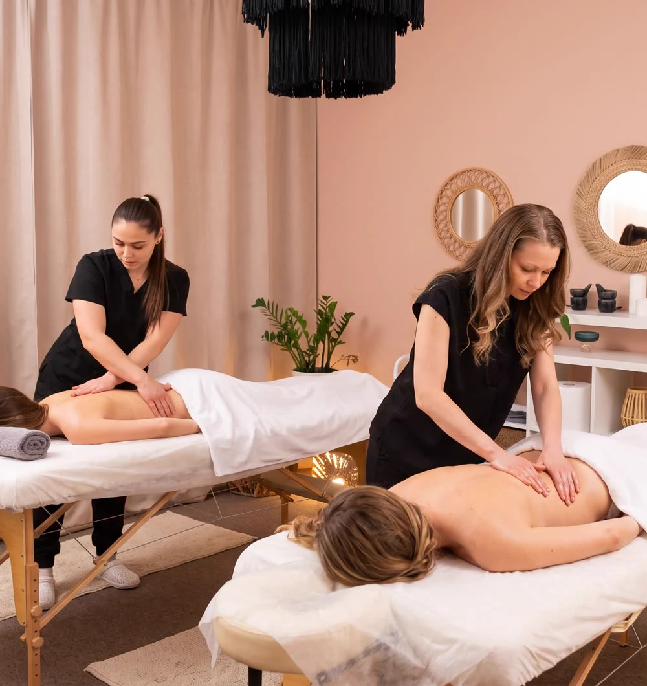
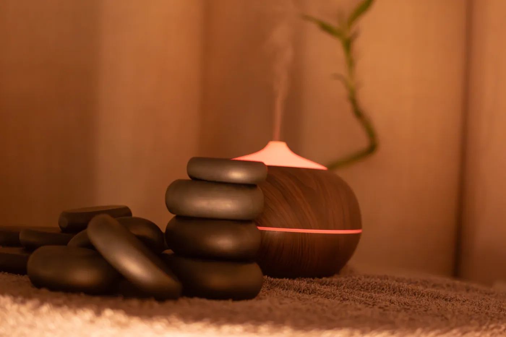
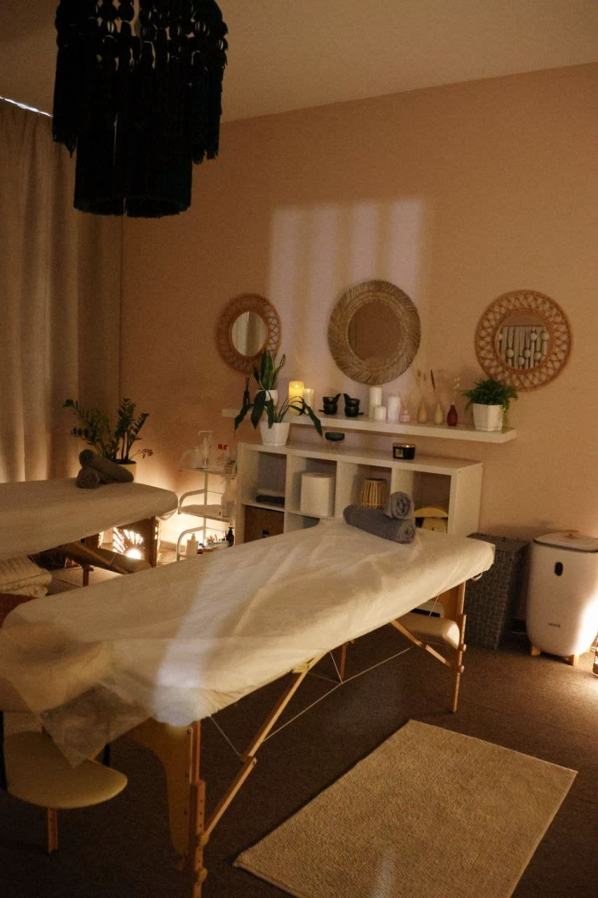
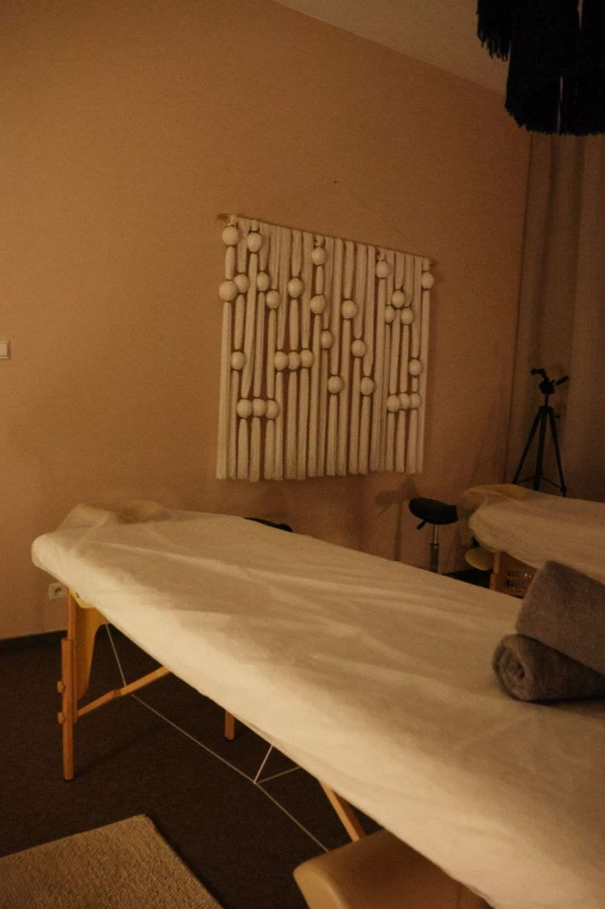
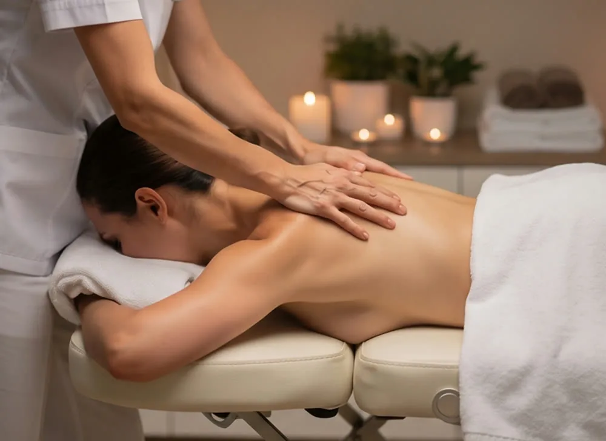
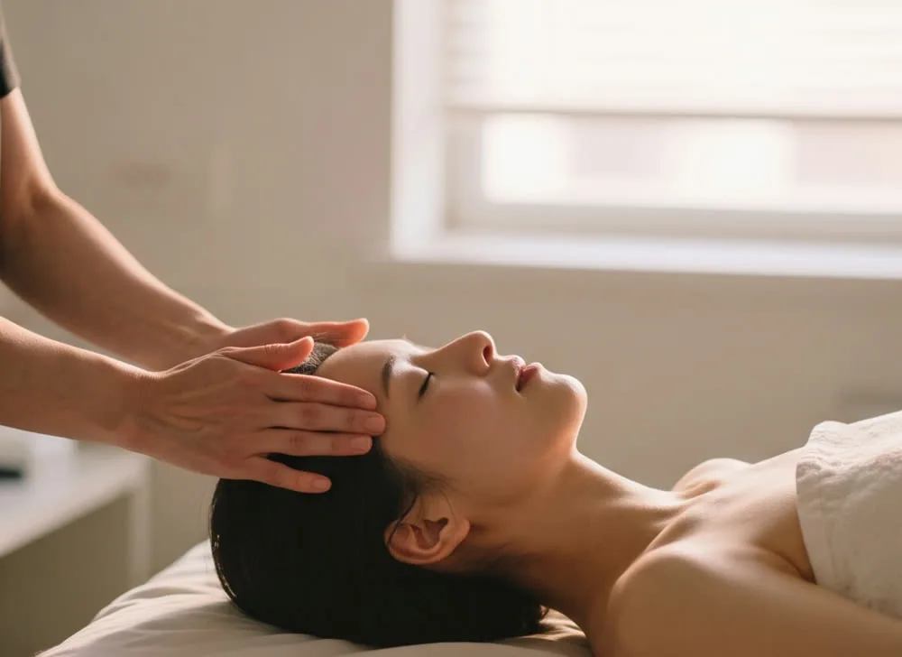
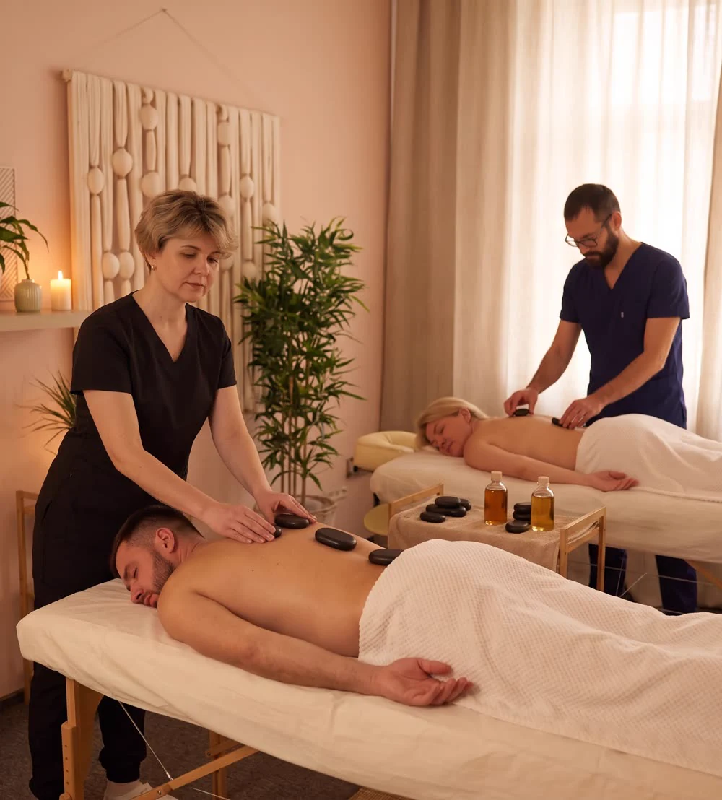
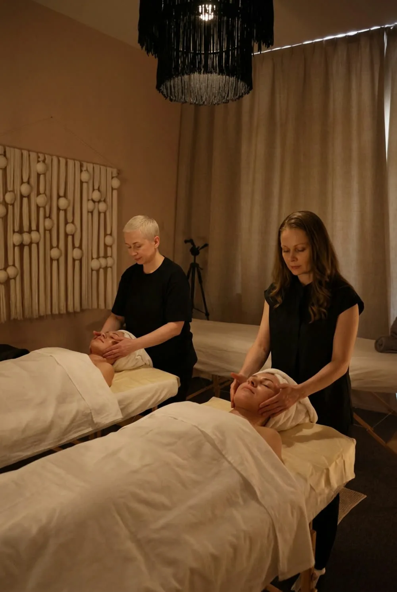

Masaże dla dwojga · 8 min czytania
Masaż dla dwojga: dlaczego warto przyjść razem

Masaż dla dwojga to dwa masaże w jednym gabinecie i w tym samym czasie: dwa stoły obok siebie, dwie terapeutki, wspólny początek i wspólny koniec. Brzmi jak drobna różnica wobec dwóch osobnych wizyt, a w praktyce zmienia całe doświadczenie. Poniżej piszemy, dlaczego masaż jest dobry dla zdrowia, co daje parze przeżycie go razem, jak wygląda masaż dla par w naszym studiu na Jeżycach i który z pięciu wariantów wybrać.
Dlaczego masaż jest zdrowy
Zacznijmy od samego masażu, bo to on robi większość pracy. Spokojny, rytmiczny dotyk przełącza organizm z trybu „walcz albo uciekaj” w tryb odpoczynku. Oddech zwalnia i pogłębia się, mięśnie przestają się bronić, a ciało dostaje sygnał, że może odpuścić. Dlatego po dobrym masażu tak wiele osób zasypia jeszcze na stole.
Co z tego realnie wynika:
- Mniej napięcia mięśniowego. Kark, barki i dolny odcinek pleców po tygodniu przy biurku albo za kierownicą to miejsca, w których stres zostaje najdłużej.
- Lepszy sen. Rozluźnione ciało łatwiej zasypia, a wieczorny masaż wiele osób odczuwa jeszcze tej samej nocy.
- Mniejsze odczuwanie stresu. Badania nad masażem regularnie pokazują spadek odczuwanego napięcia i niepokoju po zabiegu.
- Lepsze ukrwienie tkanek w masowanych miejscach, czyli uczucie ciepła i lekkości, które zostaje po wyjściu.
Masaż nie leczy chorób i nie zastępuje lekarza ani fizjoterapeuty. Jest za to jednym z najprostszych sposobów, żeby dać ciału godzinę prawdziwego odpoczynku, której w zwykłym tygodniu zwykle brakuje.
Co daje wspólny masaż dla dwojga
Skoro masaż działa na każdą osobę osobno, po co przychodzić razem? Bo wspólne wyciszenie to coś innego niż dwa osobne.
- Ten sam stan w tym samym momencie. Wychodzicie z gabinetu równie spokojni i o tej samej porze. Nikt nie czeka w poczekalni, nikt nie wraca do domu „po” i nie zastaje drugiej osoby jeszcze w biegu.
- Czas bez telefonów i bez obowiązków. Godzina, w której nie da się rozmawiać o rachunkach ani odpisywać na wiadomości, to dla wielu par rzadkość.
- Bliskość bez słów. Dotyk sprzyja wydzielaniu oksytocyny, hormonu związanego z poczuciem bezpieczeństwa i więzi. Przeżycie tego obok siebie zostaje we wspomnieniach dłużej niż kolejna kolacja w restauracji.
- Łatwiejszy pierwszy raz. Kto nigdy nie był na masażu, z bliską osobą obok wchodzi do gabinetu po prostu spokojniej.
- Wspólny temat po wyjściu. Rozmowa o tym, jak było, zwykle płynnie przechodzi w spokojny wieczór.
Dlatego romantyczny masaż dla dwojga tak często pojawia się przy rocznicach i walentynkach, ale równie dobrze sprawdza się jako zwykły, wspólny wieczór w środku tygodnia.

Jak wygląda masaż dla par w naszym studiu
Przychodzicie do studia przy ul. Zeylanda 3 na Jeżycach kilka minut przed umówioną godziną. Nie trzeba niczego zabierać: ręczniki, jednorazową bieliznę i olejki mamy na miejscu. Każda osoba odpowiada osobno na kilka krótkich pytań o urazy, leki i miejsca, które bolą, bo masaż dla dwojga to nadal dwa osobne zabiegi.
Potem przechodzicie do gabinetu dla dwojga. Terapeutki pracują równolegle i w podobnym tempie, więc plecy, nogi, ręce i kark wypadają u Was mniej więcej w tym samym czasie. Wspólna jest długość zabiegu, nie siła nacisku: jedna osoba może chcieć delikatnego rozluźnienia, druga mocniejszej pracy na barkach, i wystarczy to powiedzieć w trakcie. Po masażu zostawiamy Wam kilka minut ciszy i herbatę.
Jeśli szukacie w Poznaniu czegoś w rodzaju spa dla dwojga, ale bez basenów i tłumu, to właśnie taki format: kameralny gabinet, cisza i masaż wykonany przez dyplomowane terapeutki. Szczegóły i terminy znajdziesz na stronie masaż dla dwojga w Poznaniu.
Pięć wariantów masażu dla dwojga
Wszystkie ceny poniżej są za dwie osoby razem, nie za jedną.
Relaksacyjny dla dwojga
Najczęstszy wybór i najlepszy na pierwszy raz. To masaż relaksacyjny dla par obejmujący całe ciało, wykonywany spokojnym, płynnym ruchem na ciepłym olejku. Nie ma tu pracy „na ból”, chodzi o wyciszenie i rozluźnienie. Jeśli lubisz masaż relaksacyjny w Poznaniu w wersji dla jednej osoby, to jest ten sam zabieg, tylko razem.
60 min: 320 zł · 80 min: 420 zł · 90 min: 460 zł · 120 min: 640 zł. Masaż relaksacyjny dla dwojga


Zdrowotny dla dwojga
Dla par, w których oboje przychodzą z konkretnym napięciem: zesztywniałym karkiem, bólem między łopatkami, przeciążonymi łydkami po bieganiu. To masaż leczniczy w formie dla dwóch osób, wolniejszy i głębszy niż relaksacyjny, skupiony na miejscach, które tego potrzebują. Na co dzień ten sam zabieg robimy jako masaż leczniczy w Poznaniu dla jednej osoby.
60 min: 360 zł · 80 min: 460 zł · 90 min: 520 zł · 120 min: 720 zł. Masaż zdrowotny dla dwojga

Ciało + twarz dla dwojga
Najdłuższy i najbardziej kompletny wariant: masaż całego ciała, a na końcu masaż twarzy, czoła, skroni i linii żuchwy. Dobry wybór na specjalną okazję albo dla osób, które zaciskają zęby i noszą stres w twarzy. Jeśli szukasz osobno masażu twarzy w Poznaniu, sprawdź też nasze masaże twarzy dla jednej osoby.
90 min: 500 zł · 120 min: 640 zł · 140 min: 740 zł. Masaż ciała i twarzy dla dwojga

Kamieniami gorącymi dla dwojga
Rozgrzane kamienie bazaltowe układamy wzdłuż kręgosłupa i używamy ich do masażu zamiast samych dłoni. Ciepło wnika głębiej i rozluźnia mięśnie szybciej, dlatego masaż gorącymi kamieniami szczególnie lubią osoby, którym ciągle jest zimno, oraz pary zimą. Dla jednej osoby to masaż gorącymi kamieniami w Poznaniu, tutaj w wersji dla dwojga.
60 min: 350 zł · 80 min: 420 zł. Masaż gorącymi kamieniami dla dwojga

Kobido dla dwojga
Kobido to japoński masaż twarzy: szybkie, rytmiczne ruchy, które rozluźniają mięśnie twarzy, poprawiają ukrwienie skóry i działają liftingująco, bez igieł i wypełniaczy. Masaż Kobido dla dwojga to ten sam zabieg dla dwóch osób naraz, popularny wśród przyjaciółek i mam z córkami. Na co dzień robimy go jako masaż Kobido w Poznaniu.
60 min: 340 zł · 75 min: 420 zł. Masaż Kobido dla dwojga

Jaki masaż dla dwojga wybrać na pierwszy raz
- Chcecie po prostu odpocząć razem: relaksacyjny, 60 minut.
- Jedno lub oboje macie napięty kark i plecy: zdrowotny, najlepiej 80 lub 90 minut.
- Specjalna okazja i cały wieczór dla siebie: ciało + twarz, 120 minut.
- Zimno Wam albo szukacie czegoś innego niż zwykle: gorące kamienie.
- Przyjaciółki, mama z córką, ktoś, kto nie lubi masażu ciała: Kobido.
Jeśli nie możecie się zdecydować, napiszcie do nas. Zapytamy o kilka rzeczy i zaproponujemy wariant, a pełne ceny znajdziesz w cenniku.
Masaż dla dwojga na prezent
Szukasz prezentu dla pary? Voucher na masaż dla dwojga to wyjątkowy prezent, bo zamiast kolejnej rzeczy daje wspólnie spędzony czas. Sprawdza się na rocznicę, ślub, walentynki i święta, także jako prezent od dzieci dla rodziców.
Bon na masaż dla dwojga wystawiamy na konkretny zabieg, na przykład relaksacyjny 60 minut za 320 zł, albo na dowolną kwotę. Wysyłamy go mailem jako PDF lub przygotowujemy w wersji papierowej do odbioru w studiu. Jest ważny 6 miesięcy, a termin obdarowani wybierają sami. Więcej o tym, jak zamówić voucher na masaż w Poznaniu, przeczytasz na osobnej stronie.
Częste pytania
Jak wygląda masaż dla dwojga?
Dwie osoby leżą na dwóch stołach w jednym gabinecie, a przy każdej pracuje osobna terapeutka. Obie zaczynają i kończą w tym samym momencie. Długość zabiegu jest wspólna, ale siłę nacisku i miejsca pracy ustalamy z każdą osobą osobno. Po masażu jest kilka minut ciszy i herbata.
Ile kosztuje masaż dla dwojga w Poznaniu?
W Massage 4 You ceny podajemy za dwie osoby razem. Masaż relaksacyjny dla dwojga kosztuje od 320 zł za 60 minut, Kobido dla dwojga od 340 zł, masaż gorącymi kamieniami dla dwojga od 350 zł, zdrowotny dla dwojga od 360 zł, a masaż ciała i twarzy dla dwojga od 500 zł za 90 minut.
Jaki masaż dla dwojga wybrać na pierwszy raz?
Na pierwszą wizytę najczęściej polecamy masaż relaksacyjny dla dwojga, 60 minut. To spokojny masaż całego ciała, który pasuje prawie każdemu. Jeśli jedno z Was ma konkretne napięcia, na przykład kark po pracy przy biurku, lepszy będzie wariant zdrowotny.
Czy masaż dla dwojga to dobry prezent na walentynki lub rocznicę?
Tak, to jeden z najczęściej wybieranych prezentów dla pary. Voucher na masaż dla dwojga wystawiamy na konkretny zabieg albo na dowolną kwotę, jako PDF mailem lub w wersji papierowej. Jest ważny 6 miesięcy, a termin obdarowani wybierają sami. Przed walentynkami warto rezerwować z dwutygodniowym wyprzedzeniem.
Czy masaż dla dwojga jest tylko dla par?
Nie. Przychodzą do nas pary, ale też mama z córką, przyjaciółki, rodzeństwo i współpracownicy. Nazwa opisuje format, czyli dwie osoby w tym samym czasie, a nie relację między nimi.
Ten tekst ma charakter informacyjny i nie zastępuje porady lekarskiej. Przy gorączce, świeżych urazach, zakrzepicy albo w pierwszym trymestrze ciąży skonsultuj masaż z lekarzem.